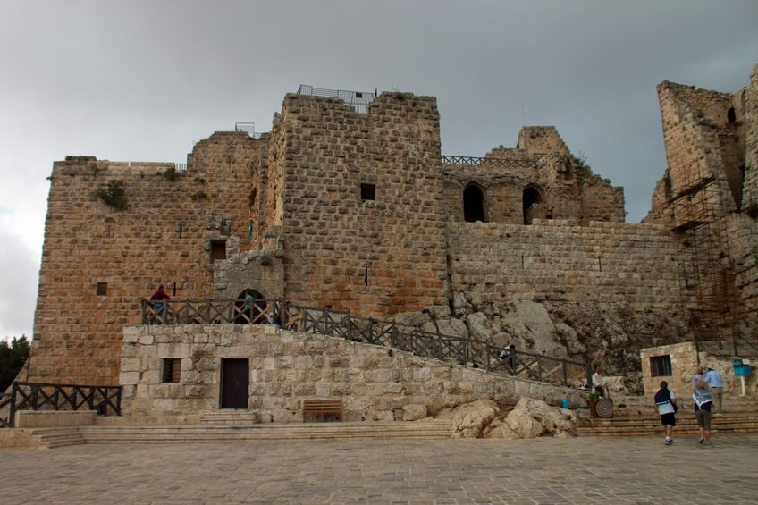

البتراء

البترا ... أكثر من أعجوبة
تعتبر مدينة البتراء، عاصمة العرب الأنباط من أشهر المواقع الأثرية في العالم وأهم مواقع الجذب السياحي في الأردن، حيث تزورها أفواج السياح من كل بقاع الأرض، وتقع عن بعد 240 كيلو مترا إلى الجنوب من عمان وعلى بعد 120 كم من خليج العقبة - البحر الأحمر (الخريطة) ، وتتميز البتراء بطبيعة معمارها المنحوت في الصخر الوردي الذي يحتوي على مزيج من الفنون المعمارية القديمة التي تنتمي إلى حضارات متنوعة وهي عبارة عن مدينة كاملة منحوتة في الصخر الوردي اللون.
والبتراء مثال فريد لأعرق حضارة عربية ( حضارة الأنباط)، حيث قام العرب الأنباط بنحتها من الصخر منذ أكثر من 2000 عام،وهي شاهدة على أكثر الحضارات العربية القديمة ثراءً وإبداعا، حيث بقي موقع البتراء غير مكتشف للغرب طيلة الفترة العثمانية، حتى أعاد اكتشافها المستشرق السويسري يوهان لودفيغ بركهارت عام 1812، من خلال رحلة استكشافية في كل من بلاد الشام ومصر والجزيرة العربية لحساب الجمعية الجغرافية الملكية البريطانية، لذلك يطلق العديد من العلماء والمستشرقين على البتراء "بالمدينة الضائعة" وذلك لتأخر إظهارها إلى العالم، وقد وصفها الشاعر الانجليزي بيرجن بأنها المدينة الشرقية المذهلة، المدينة الوردية التي لا مثيل لها.
ازدهرت مملكة الأنباط وامتدت حدودها جنوباً لتصل إلى شمال غرب الجزيرة العربية حيث توجد مدينة مدائن صالح ،وقد مدّ الأنباط نفوذهم كي يصل إلى شواطئ البحر الأحمر وشرق شبه جزيرة سيناء ومنطقة سهل حوران في سوريا حتى مدينة دمشق ، فكان يحيط بالمملكة النبطية وعاصمتها البتراء العديد من الممالك والحضارات :منها الحضارة الفرعونية غرباً ،وحضارة تدمر شمالاً، وحضارة بلاد ما بين النهرين شرقاً، لذا كانت المملكة النبطية تتوسط حضارات العالم القديم، وتشكل بؤرة التقاء وتواصل مختلف الحضارات العالمية.
اشتهر الأنباط بتقنيات هندسة المياه والحصاد المائي وهم أصحاب الفكرة منذ القدم، حيث طور الأنباط أنظمة الري وجمع مياه الأمطار والينابيع وتفننوا في بناء السدود والخزانات التي حفروها في الصخر، كما شقوا القنوات لمسافات طويلة، إضافة لبنائهم المصاطب الزراعية في المنحدرات
وادي رم
وادي رم" أو ما يسمى بـ"وادي القمر"، نظراً لتشابه تضاريسه مع تضاريس القمر، فسطحه يمثل واحدةً من أكثر ما أظهرته العمليات الجيولوجية والمناخية المعقدة على وجه الأرض عبر ملايين السنين، حيث إن مياه الأمطار والزلازل وقوة الرياح التي تمر بطبقات الحجر الرملي، قامت بترك بصمتها عبر سلسلةٍ من الشقوق التي تحولت فيما بعد إلى ممرات ما يعرف اليوم بـ"وادي رم".
وعبر تاريخٍ طويل بقي "وادي رم" في الأردن كما هو لم تطله يد إنسان ولم تعبث به قوته التدميرية، يسكنه الهدوء والسكون حتى وهو يعج بمئات السياح الذين يزورونه من جميع أنحاء العالم.
أما عناصر الطبيعة الأخرى كالرياح والطقس وأتربته الفريدة من نوعها، فقد شكلت ناطحات سحاب طبيعية شاهقة ومهيبة، وجعلت منه مثار إعجاب وفضول الكثيرين عبر التاريخ وما زال.
ووادي رم، هو وادٍ سياحي يقع جنوبي الأردن، على بعد 70 كم شمالي مدينة العقبة الساحلية، يمتاز بوجود الجبال الشاهقة فيه، والتي تعطي لوناً جمالياً مائلاً إلى اللون الأحمر الأرجواني مع انعكاسة خافتة لضوء الشمس لحظة غروبها من خلف تلك الجبال، المكونة من الصخر الرملي التي أخذت شكلها المميز بسبب العوامل الطبيعية من نحت وتعرية في العصور القديمة
البحر الميت
البحر الميت هو بحيرة ملحية مغلقة تقع في أخدود وادي الأردن ضمن الشق السوري الأفريقي، على خط الحدود الفاصل بين الأردن وفلسطين التاريخية (الضفة الغربية وإسرائيل). يشتهر البحر الميت بأنه أخفض نقطة على سطح الكرة الأرضية، حيث بلغ منسوب شاطئه حوالي 400 متر تحت مستوى سطح البحر حسب سجلات عام 2013. كما يتميز البحر الميت بشدة ملوحته، إذ تبلغ نسبة الأملاح فيه حوالي 34%، وهي ما تمثل تسعة أضعاف تركيز الأملاح في البحر المتوسط، وواحدة من أعلى نسب الملوحة بالمسطحات المائية في العالم. وقد نتجت هذه الأملاح لأن البحيرة هي وجهة نهائية للمياه التي تصب فيه، حيث أنه لا يوجد أي مخرج لها بعده.
يصل عرض البحر الميت في أقصى حد إلى 17 كم، بينما يبلغ طوله حوالي 70 كم. وقد بلغت مساحته في عام 2010 حوالي 650 كم2 إذ تقلصت خلال الأربع عقود الماضية بما يزيد عن 35%. كما يلعب المناخ الصحراوي للمنطقة الذي يمتاز بشدة الحرارة والجفاف ومعدلات التبخر العالية دورًا كبيرًا في زيادة تركيز تلك الأملاح فيه.
لقد عانى منسوب البحر الميت مؤخرًا من التراجع المستمر، حيث يرجع هذا الأمر إلى عدد من الأسباب الرئيسية، كالاستخدام المكثف لمصادر المياه، وأهمها نهر الأردن، وضخ المياه في الحوض الجنوبي، حيث يتكون البحر الميت حاليًا من حوضين؛ شمالي وجنوبي يقسمهما شبه جزيرة اللسان. ونتيجة للإنخفاض المستمر لهذا المستوى، تعرض الجزء الجنوبي من البحيرة للجفاف، حيث إنّ الجزء الجنوبي أقل عمقًا من نظيره الشمالي، ويصل ارتفاع منسوب شاطئه إلى 401 متر تحت مستوى سطح البحر. ومع تجفيف الجزء الجنوبي، تم إنشاء برك لتبخير المياه وإنتاج البوتاس والمواد الكيماوية الأخرى مثل المنجنيز و المغنسيوم و البرومين في مصانع البوتاس الإسرائيلية، وشركة البوتاس العربية في الأردن. وتحتاج تلك البرك إلى ضخ كبير من مياه البحر الميت وتبخيرها، مما أثر تأثيرًا كبيرًا على زيادة انخفاض مستوى سطح البحر.
لقد بلغ المعدل السنوي لانخفاض مستوى سطح البحر خلال العقد المنصرم بمقدار يعادل الفقدان لمدة سنة كاملة، حيث أصبح المستوى ينخفض حوالي متر واحد كل عام. ولقد زاد هذا المعدل في عام 2012 بشكل واضح، فكان إنخفاض مستوى البحر 1.40 متر. وقد أدى الانخفاض التراكمي في مستوى المياه إلى تغيرات كبيرة أيضا في تضاريس المناطق المجاورة وفي البحر الأبيض المتوسط بما في ذلك تغيرات لا يمكن الرجوع عنها في الجزء الشمالي، من خلق للمجاري، والانسحاب من الشواطئ، والأضرار التي لحقت بالبنية التحتية (الطرق والجسور) والمحميات الطبيعية.
يُعد البحر الميت مهماً جدًا للصناعة والسياحة في المنطقة، حيث تُعتبر تركيبة مياهه مختلفة عن المياه الطبيعية، باحتواءها على تركيز عالي من الكالسيوم والبوتاسيوم. ويُستغل هذا في مصانع الجانبين الأردني والإسرائيلي. وترجع الأهمية التاريخية والسياحية لمنطقة حوض البحر الميت إلى البحر نفسه وإلى شواطئه، حيث توجد بعض المعالم الأثرية والدينية الهامة في المنطقة مثل مسعدة، وخربة قمران، وكهف النبي لوط، بالإضافة إلى التشكيلات الملحية الطبيعية، والمناخ السائد فيه، فكلها جعلت من البحر الميت نقطة جذب سياحية عالمية، وخصوصًا فيما يتعلق بالسياحة العلاجية. وتحوي المنطقة على آلاف الغرف الفندقية، حيث تتركز في الجزء الشمالي الشرقي في الأردن، بالإضافة إلى الجزء الغربي المطل على الحوض الجنوبي. وقد رُشح ليكون أحد عجائب الدنيا السبع الطبيعية في نطاق البحيرات.
ورغم أن دولة فلسطين لها جزء يطل على البحر الميت إلا أن السلطات الإسرائيلية لا تسمح للفلسطينيين باستغلال مواردهم من البحر، بل تمنعهم تماما من الذهاب إلى ساحل البحر الميت بحجة الأمن. وتشكل حقوق الفلسطينيين في استغلال نصيبهم من البحر الميت نقطة هامة في مباحثات السلام، بالإضافة إلى حقوقهم ف
قلعة عجلون

تُعتبر عجلون من المدن والمُحافظات الأردنية التي تقع في الشمال الغربي من المملكة، وهي سلسلة من الجبال العالية يُطلق عليها سلسلة جبال عوف، كما تُسمّى باسم " جلعاد" على زمن الأمويين ويقصد بها الخشونة والصلابة. تبعد عجلون عن العاصمة عمان قرابة 76 كم، وتحدّها من الجهة الغربية والشمالية محافظة إربد على بعد 32 كم ، ومن الجهة الشرقية محافظة جرش على بعد 20 كم، ومن الجهة الجنوبية محافظة البلقاء على بعد 72 كم.[١] يبلغ عدد سكان المحافظة قرابة 141 ألف نسمة، وتضم قرابة 27 قرية منها: عرجان، والمرجم، والطيارة، وعنجرة، وعبين، وكفرنجة، ومحنا، واشتفينا، وسامتا، وعبلين، وحلاوة، والهاشمية، وأوصرة، وعين جنا، ورأس منيف، وأم الينابيع، وصخرة، وغيرها.
جرش
هي مدينة أردنية تعد أكبر مدن محافظة جرش، والتي تبعد عن العاصمة الأردنية عمان حوالي 48 كم شمالاً، وترتفع عن سطح البحر قرابة 600 م ويبلغ عدد سكانها حوالي 41500 ألف نسمة، يعود تأسسيها إلى عهد الإسكندرالأكبر في القرن الرابع قبل الميلاد، وكانت تسمى آنذاك باليونانية "جراسا"، وقد أطلق عليها العرب الساميون فيما بعد اسم جراشا أو جرشو، والتي تعني: "مكان كثيف الشجر". وقد عاشت المدينة فترة ذهبية تحت الحكم الروماني، حيث تعد من أفضل المدن الرومانية المحافظ عليها في العالم إلى الآن، فقد كانت مدفونة بالتراب قبل أن يتم التنقيب عنها مجدداً والحفاظ عليها، وتتألف جرش من شوارع معبدة ومعمدة ومعابد عالية على رؤوس التلال، وتضم أيضاً مسارحَ وميادين وحمامات ونوافير، فتتميز بهندسة معيارية خاصة تجمع بين العالم الروماني واليونانيّ. تاريخ جرش العهد الروماني خضعت جراسا إلى حكم الرومان الذين احتلوا بلاد الشام وأسسوا فيها اتحاد المدن العشر، والذي عرف باسم مدن "الديكابوليس"، وهي عشر مدن رومانية أقامها القائد بومبي عام 63 ق.م، لتشكل معاً اتحاداً اقتصادياً وثقافياً فيدرالياً في شمال فلسطين والأردن وجنوب سوريا لمواجهة الأنباط، ولقد تحولت المدينة إلى مركز تجاري وثقافي مزدهر، بسبب موقعها على ملتقى طرق القوافل، لتصبح فيما بعد أهم مدن الاتحاد في عهد الإمبراطور هادريان، وقد أدخل الرومان إليها الديانة المسيحية عام 350 ميلادياً لتزدهر فيها حركة بناء وتشييد الكنائس والأديرة المسيحية، وفي عام 635 م دخلتها جيوش الفتح الإسلامي بقيادة شرحبيل بن حسنة في عهد الخليفة الثاني لتستعيد المدينة ازدهارها في العصر الأموي، وفي عام 747م دمر الزلازل أجزاء كبيرة من المدينة. Volume 0% التاريخ المعاصر في عشرينيات القرن الحالي ازدهرت جرش ازدهاراً كبيراً نتيجة لاستقرار اللاجئين الفلسطيين فيها، ونتيجة لوقوعها في موقع يعد من أهم شرايين المواصلات في الأردن المتمثل في إربد وعمان، ونمت مكانتها السياحية بسبب وجود الآثار الرومانية المهمة فيها، حيث تقع جرش في قائمة أفضل المدن المحبب الزيارة إليها في الأردن بعد البتراء، حيث يعقد في المدينة في شهر تموز من كل عام مهرجان يسمى بمهجران جرش، والذي يمتاز بالعروض الفلولكلورية ورقصات البالية والأمسيات الشعرية التي تؤديها فرق عالمية من كل أنحاء العالم وحفلات غنائية، إضافة للصناعات اليدوية والتقليدية